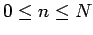

Inhalt Index DeskTop Bronstein

 Integraltransformationen Z-Transformation Anwendungen der Z-Transformation
Integraltransformationen Z-Transformation Anwendungen der Z-Transformation


In den Anwendungen kommt es häufig vor, daß die Werte yn der Differenzengleichung nur für endlich viele Indizes  gesucht sind. Im Falle einer Differenzengleichung 2. Ordnung (15.136) werden dann in der Regel die beiden sogenannten Randwerte y0 und yN vorgegeben. Zur Lösung dieser Randwertaufgabe geht man von der Lösung (15.139f) der entsprechenden Anfangswertaufgabe aus, wobei an Stelle des unbekannten Wertes y1 jetzt yN einzuführen ist. Dazu setzt man in (15.139f) , dann kann man y1 in Abhängigkeit von y0 und yN ausrechnen:
| (15.141a) |
Man setzt diesen Wert in (15.139f) ein und erhält